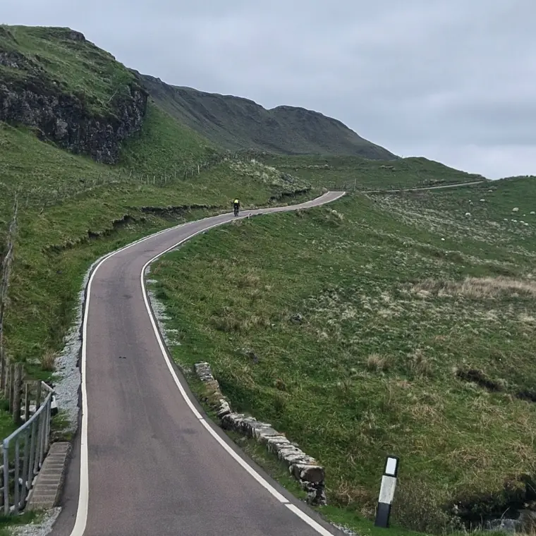

GPX files
The route will be provided in sections nearer to the event.
The current draft route is on Ride with GPS, where you can view the profile and download a GPX file. Bear in mind that this is a draft: the final route sections, along with comprehensive event information, will be sent to riders nearer the time.
Current draft route
2028 (DRAFT) Grand Tour of Scotland 2000km on Ride with GPS
Before you load it onto your device
Please do not rely on the draft route for the event itself. Ride the sections issued to riders in the final event information, and check the control list for the order in which controls must be visited.
